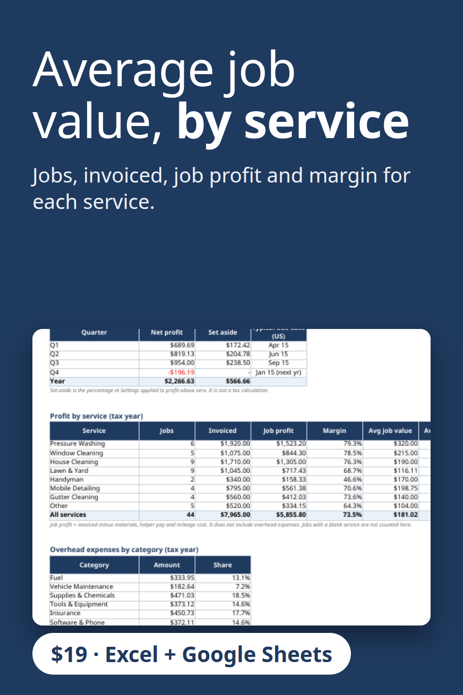

A reports tab that shows, for each service, the number of jobs, total invoiced, job profit, margin and average job value, so you can price and schedule with real numbers. Part of a bookkeeping spreadsheet for Excel and Google Sheets with no macros. $19 instant download.
Get the $19 version on Gumroad
Not ready to buy? Start with the free Income and Expense Tracker
Built with the help of AI tools, then tested: every report number was recalculated separately.